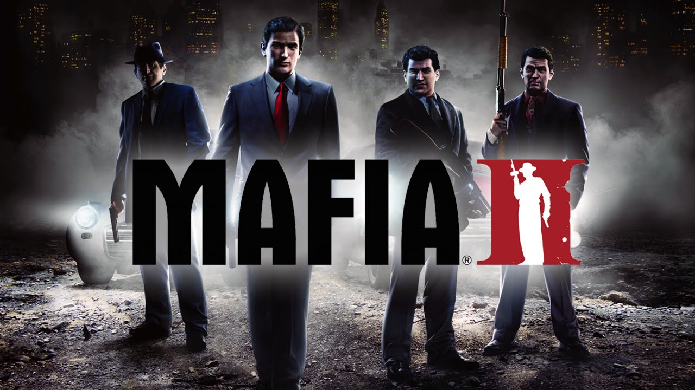
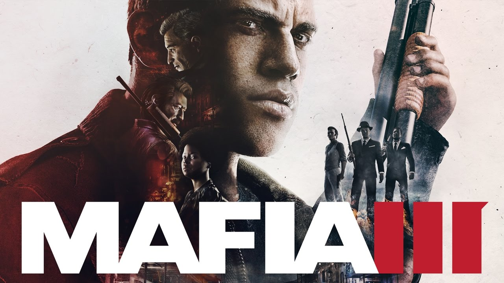
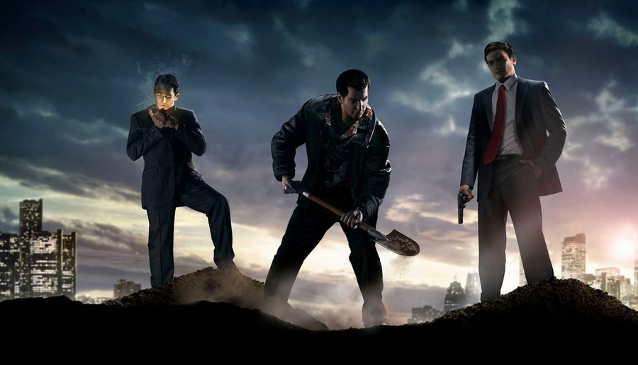

A Franchise
A Mafia sorozat 3 részt élt meg eddig, TPS nézetű, nyílt világú, lövöldözős játékok amelyeknek történetük tele van fordulatokkal.
 Mafia: The City of Lost Heaven
Mafia: The City of Lost Heaven
Ez az első része a sorozatnak, melyet a cseh Illusion Softworks fejlesztett és a Gathering of Developers adott ki 2002. Augusztus 27-én.
A történet az 1930-as években játszódik, Lost Heaven város egyik hétköznapi taxisát, Tommy Angelot irányíthatjuk, aki véletlenül belekeveredik Don Salieri bűnszervezetébe,
miután egy szokásos estén a szervezet két tagja, Paulie és Sam éppen menekült néhány gengszer elől, és mivel Tommy épp a helyszínen volt,
Paulie és Sam fegyvert fogtak a fejéhez, és Tommynak kellett megszöktetnie őket az üldöző gengszterek elől. Ezután a Don meginvitálja
Tommyt, hogy legyen a sofőrjük. Szépen lassan már gyilkolnunk is kell, megvesztegetni embereket, szépen lassan közeledve Tommy morális
határaihoz.
 Mafia II
A folytatás 2010. Augusztus 24-én érkezett, a 2K Czech fejlesztette (régebben Illusion Softworks) és a 2K Games adta ki. Ezúttal az
1940-es és 1950-es években járunk. A főszereplő, Vito Scaletta egy szegény család második gyerekeként született
1925-ben Szicíliában, majd családjával elköltöztek Amerikába, Empire Bay városába. Összebarátkozik egy Joe Barbaro nevű emberrel, aki
bűnözésbe rántja Vitot. Egyik lopásuk alkalmával Vitot elkapják a rendőrök, majd börtön helyett inkább a hadseregbe vonul. A szicíliai Huskey hadműveletben vesz részt, ahol a felszabadulást segíti.
Nem sokkal később lövést kap, majd visszatér Amerikába. Találkozik Joe-val, akiből időközben Maffiózó lett. Szerez hamis papírokat, és elintézi
Vitonak, hogy soha többé ne kelljen a seregbe visszamennie. Vito családjának tartozásai vannak uzsorásoknak, amiket néhai apjának köszönhetnek.
Tisztességes munkával nem sikerül neki a pénzt megszereznie, így Joe-t követve belőle is Maffiózó válik.
 Mafia III
A trilógia harmadik felvonását a Hangar 13 fejlesztette és a 2K Games adta ki 2016. október 7-én.
1968-ban járunk, mivel ekkor az Egyesül Államokban nagy háborúellenesség volt és a rasszizmus is ekkor élte fénykorát. Főhösünk ezúttal egy félvér katona, Lincoln Clay,
aki a vietnámi háborúban szolgált a különleges erők katonájaként. A történet ott kezdődik, hogy Lincoln visszatér New Bordeaux-ba, és beáll a Hollow nevű bandába, ahová a hadsereg előtt is tartozott.
A banda vezére, Sammy, tartozik az olasz maffiának, mivel a helyi Haiti banda rablásai miatt nem tudott fizetni a maffia fejének, Sal Marcanónak. Lincoln segítségével leszámolnak a Haiti bandával,
majd Sal felajánlja neki, hogy legyen ő a Hollow vezetője Sammy helyett, de Lincoln visszautasítja. Elkezd együtt dolgozni Sal fiával, Giorgival, akivel kirabolják a szövetségi bankot Louisianában.
Az ünneplés közepette megérkezik Sal, és kivégzi az egész bandát, viszont Lincolnnak sikerül túlélnie a helyi pap és a barátai segítségével.
Miközben gyógyul, egy barátja, Donovan kémkedik a család után. Amikor Lincoln felépül, Donovan segítségével megfogadja, hogy bosszút áll,
és átveszi az uralmat New Bordeaux felett.
 Epilógus
A világot nem papírra vetett törvények irányítják, hanem a benne élő emberek. Néhányan betarták a törvényeket, mások nem.
Mindenki esetében saját magától függ, hogy milyen lesz a világa, mihhez kezd vele. És egy jó nagy adag szerencse is kell hozzá,
hogy más ne csináljon poklot az életéből. Ez nem olyan egyszerű mint ahogyan azt az iskolában tanítják, jó ha az ember egy általa létrehozott
erős értékrendhez tudja tartani magát. A házasságban, a bűnözésben, a háborúban, minding és mindenhol. Tommy Angelo